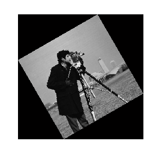
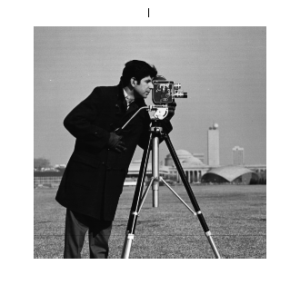

If you know that one image is distorted relative to another only by a rotation and scale change, you can use cp2tform to find the rotation angle and scale factor. You can then transform the distorted image to recover the original image.
Bring your favorite image into the workspace.
I = imread('cameraman.tif');
imshow(I)scale = 0.6;
J = imresize(I,scale); % Try varying the scale factor.theta = 30;
K = imrotate(J,theta); % Try varying the angle, theta.
figure, imshow(K)Use the Control Point Selection Tool to pick at least two pairs of control points. You can run the rest of the demo with these pre-picked points, but try picking your own points to see how the results vary.
input_points = [129.87 141.25; 112.63 67.75]; base_points = [135.26 200.15; 170.30 79.30]; cpselect(K,I,input_points,base_points);
Save control points by choosing the File menu, then the Save Points to Workspace option. Save the points, overwriting variables input_points and base_points.
Find a TFORM structure that is consistent with your control points.
t = cp2tform(input_points,base_points,'linear conformal');After you have done Steps 6 and 7, repeat Steps 5 through 7 but try using 'affine' instead of 'linear conformal'. What happens? Are the results as good as they were with `linear conformal'?
The TFORM structure, t, contains a transformation matrix in t.tdata.Tinv. Since you know that the transformation includes only rotation and scaling, the math is relatively simple to recover the scale and angle.
Let sc = s*cos(theta) Let ss = s*sin(theta)
Then, Tinv = t.tdata.Tinv = [sc -ss 0;
ss sc 0;
tx ty 1]where tx and ty are x and y translations, respectively.
ss = t.tdata.Tinv(2,1); sc = t.tdata.Tinv(1,1); scale_recovered = sqrt(ss*ss + sc*sc) theta_recovered = atan2(ss,sc)*180/pi
scale_recovered =
0.6000
theta_recovered =
29.3699
The value of scale_recovered should be 0.6 or whatever scale you used in Step 2: Resize the Image. The value of theta_recovered should be 30 or whatever theta you used in Step 3: Rotate the Image.
Recover the original image by transforming K, the rotated-and-scaled image, using TFORM structure t and what you know about the size of I.
In the recovered image, notice that the resolution is not as good as in the original image I. This is due to the sequence which included shrinking-and-rotating then growing-and-rotating. Shrinking reduces the number of pixels in the image K so it effectively has less information than the original image I.
The artifacts around the edges are due to the limited accuracy of the transformation. If you were to pick more points in Step 4: Select control points, the transformation would be more accurate.
D = size(I); recovered = imtransform(K,t,'XData',[1 D(2)],'YData',[1 D(1)]); % Compare recovered to I. figure, imshow(I) title('I') figure, imshow(recovered) title('recovered')